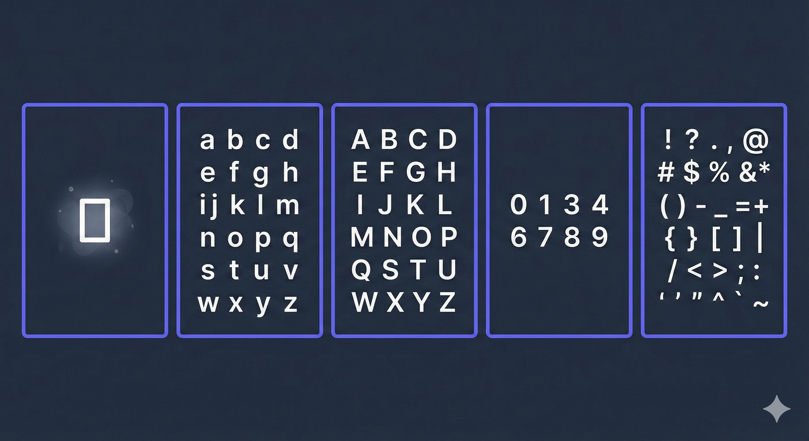
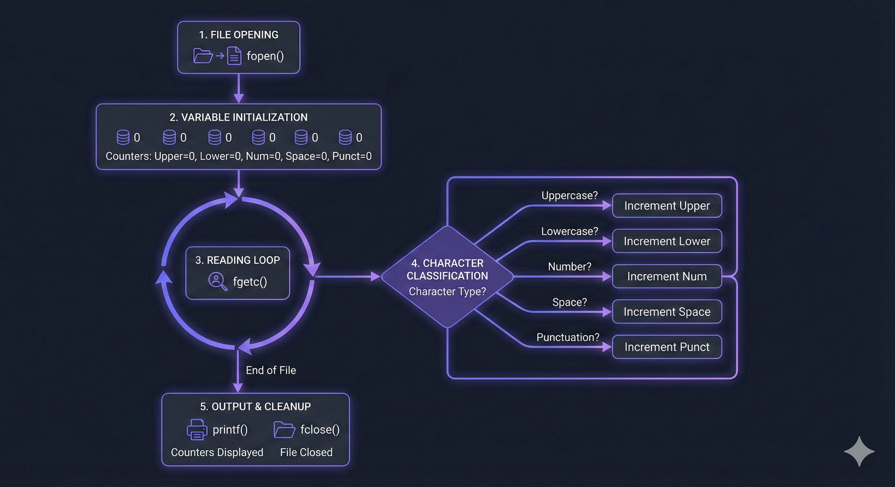
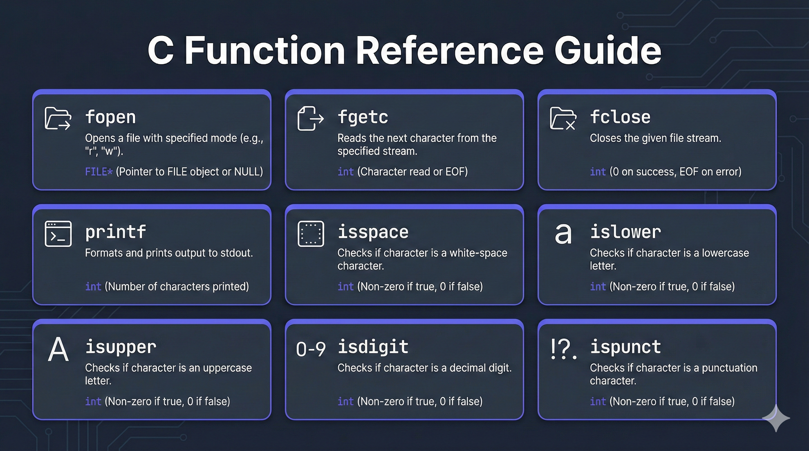
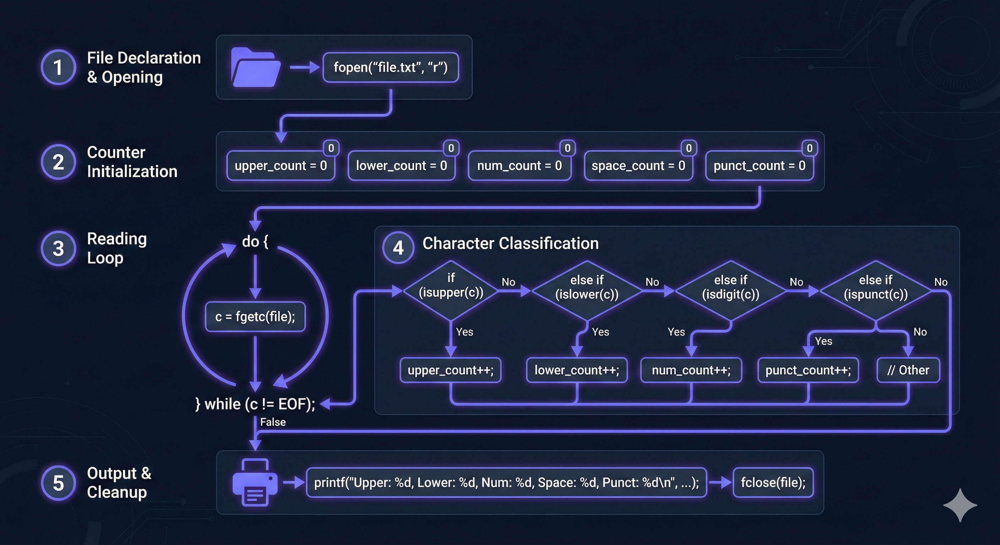
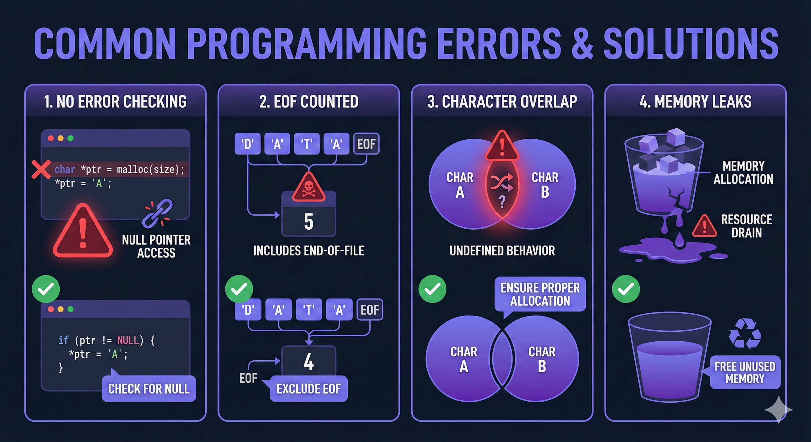
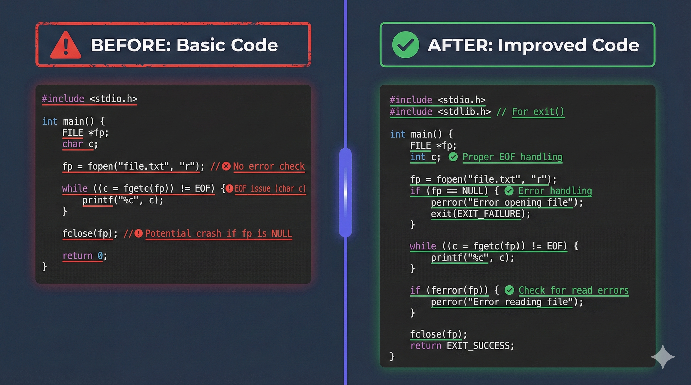

Understanding File I/O and Character Classification in C
Learn how this C program reads a file and categorizes characters into different types using standard library functions.

This C program reads a text file character by character and counts different types of characters:
The program uses a do-while loop to read until the end of file (EOF) and categorizes each character using functions from the ctype.h library.
#include <stdio.h>
Provides file I/O functions: fopen(), fgetc(), fclose(), and printf().
#include <stdlib.h>
Standard library for general utilities (though not heavily used in this program).
#include <ctype.h>
Character classification functions: islower(), isupper(), isdigit(), isspace(), ispunct().

1. File Opening:
Opens "text.txt" in read mode using fopen(). The file pointer is stored in fileOpen.
2. Variable Initialization:
Five counters are initialized to zero to track each character type.
3. Character Reading Loop:
Uses a do-while loop to read characters one by one. The loop continues until EOF (End of File) is reached.
4. Character Classification:
Each character is checked using if-else chain with ctype.h functions to determine its type and increment the appropriate counter.
5. Output & Cleanup:
Prints all counts and closes the file using fclose().

fopen(file, "r"): Opens a file in read mode. Returns a FILE pointer or NULL if the file doesn't exist.
fgetc(fileOpen): Reads a single character from the file. Returns the character as an int, or EOF when end of file is reached.
isspace(c): Returns non-zero if character is whitespace (space, tab, newline, etc.).
islower(c): Returns non-zero if character is a lowercase letter (a-z).
isupper(c): Returns non-zero if character is an uppercase letter (A-Z).
isdigit(c): Returns non-zero if character is a digit (0-9).
ispunct(c): Returns non-zero if character is punctuation (!, ?, ., ,, etc.).
fclose(fileOpen): Closes the file and frees resources. Always close files after use!

fopen(). The "r" mode means read-only. If the file doesn't exist, fopen() returns NULL (this program doesn't check for this error).
contaMaiuscole (uppercase), contaMinuscole (lowercase), contaNumeri (numbers), contaspazi (spaces), and contaPunteggiatura (punctuation).
do-while loop is used to ensure at least one character is read. fgetc() reads one character at a time and returns it as an integer. When the end of file is reached, it returns EOF (-1).
isspace() is checked first, then islower(), isupper(), isdigit(), and finally ispunct(). When a match is found, the corresponding counter is incremented.
printf() in the order: spaces, lowercase, uppercase, numbers, punctuation. Finally, fclose() closes the file to free system resources.
Learn how C programs interact with files using FILE pointers, opening files in different modes, and reading data sequentially.
The do-while loop ensures the loop body executes at least once, which is perfect for reading files where you need to check EOF after reading.
The ctype.h library provides functions to categorize characters, making it easy to identify character types without manual ASCII comparisons.
Counters are incremented as data is processed, demonstrating a common pattern in programming for aggregating information.

The program doesn't check if fopen() returns NULL. If "text.txt" doesn't exist, the program will crash when trying to read from a NULL pointer.
The do-while loop reads EOF (-1) and may incorrectly classify it. The check should happen before processing the character.
The if-else chain order matters. If isspace() wasn't first, spaces might be miscounted. The current order is correct.
While the file is closed, if an error occurs before fclose(), resources aren't freed. Error handling would prevent this.

fopen() returns NULL before using the file pointer. Print an error message and exit gracefully.
if (carattere == EOF) break; before processing the character. This prevents EOF from being counted.
countUppercase, countLowercase improve code readability for international developers.
printf("Spaces: %d\nLowercase: %d\n...", ...); This makes the output more readable.
int main(int argc, char *argv[]) allows users to specify different files without recompiling.
If you create a file named text.txt with the following content:
The program will output:
Breakdown:
Note: The output format is: spaces lowercase uppercase numbers punctuation
Learn about different file modes: "r" (read), "w" (write), "a" (append), and "r+" (read/write).
Explore fgets() for line-by-line reading, fread() for binary data, and fscanf() for formatted input.
Discover isalnum() (alphanumeric), isxdigit() (hexadecimal), tolower(), and toupper() for character manipulation.
Learn about proper error handling with errno, perror(), and strerror() to make your programs more robust.
Consider using arrays or structs to store character counts, making the code more maintainable and easier to extend for additional character types.
For large files, consider buffered I/O techniques or reading in chunks rather than character-by-character to improve performance.
A: The do-while loop ensures the body executes at least once, which is necessary because we need to read a character before checking for EOF. A regular while loop would require reading before the loop, which is less elegant.
A: If the file is empty, fgetc() will immediately return EOF. The loop will execute once, process EOF (which may be miscounted), and then exit. All counters will be 0 except potentially one incorrect count.
A: Technically yes, but it's not recommended. The program opens the file in text mode ("r"), which may cause issues with binary data. For binary files, use "rb" mode and handle EOF differently.
A: While fgetc() returns an int, storing it in a char can cause issues with EOF detection. It's better practice to use int for the variable storing fgetc() return values.
A: Characters that don't match any of the conditions (spaces, lowercase, uppercase, digits, or punctuation) are simply ignored and not counted. This could include control characters or extended ASCII characters depending on the system.